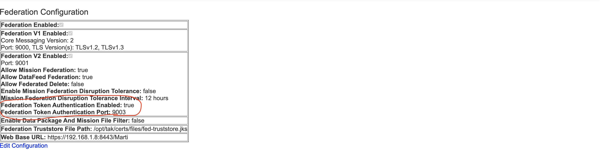
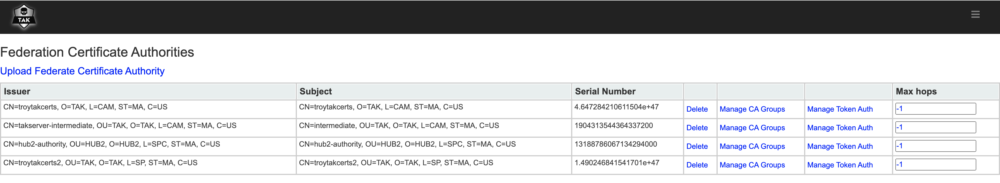
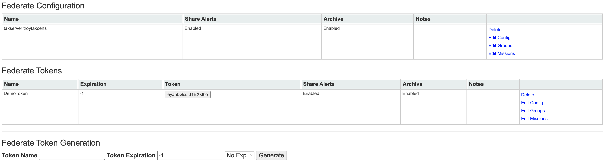

Tokens
TAK Server / Federation Hub have the ability to authenticate federation connections via a token rather than x509 mutual authentication. While tokens are going to be less secure than traditional x509 mutual auth (mTLS), the benifit of them is that they will allow federation connections to work in network environments where mutual authentication is not an option. (such as networks running break and inspect on all tls connections)
Enable Tokens
To open enable token authentication, navigate to the Configuration > Federation page. You will need to enable the option and set an open port that federates using token authentication will connect to.

Automatic Tokens
Automatic tokens are enabled on a per CA basis. To enable, navigate to Configuration > Federate Certificate Authorities and click Manage Token Auth for the CA's you wish to enable it for. This will allow incoming federate connections to present thier client certificates over TLS (instead of traditional mTLS) to authenticate and automatically receive a token. (make sure they are connecting to the token port configured above!)

Manual Tokens
Manual tokens are enabled by navigating to the Federate Token Generation section at Configuration > Federation. Once generated, these tokens are then manually distributed to other TAK admins so they can drop them into their outgoing connection configuration for connecting to the TAK Server. (you technically don't need the remote side's ca.pem when using manual tokens, but they still need yours)
